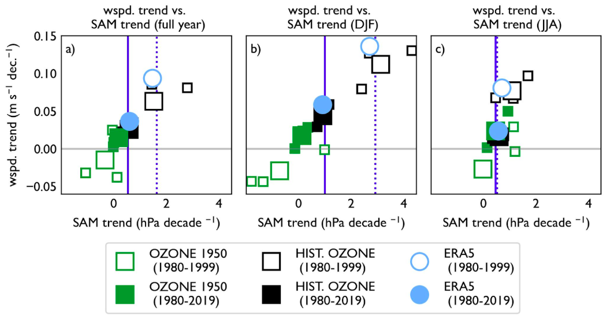
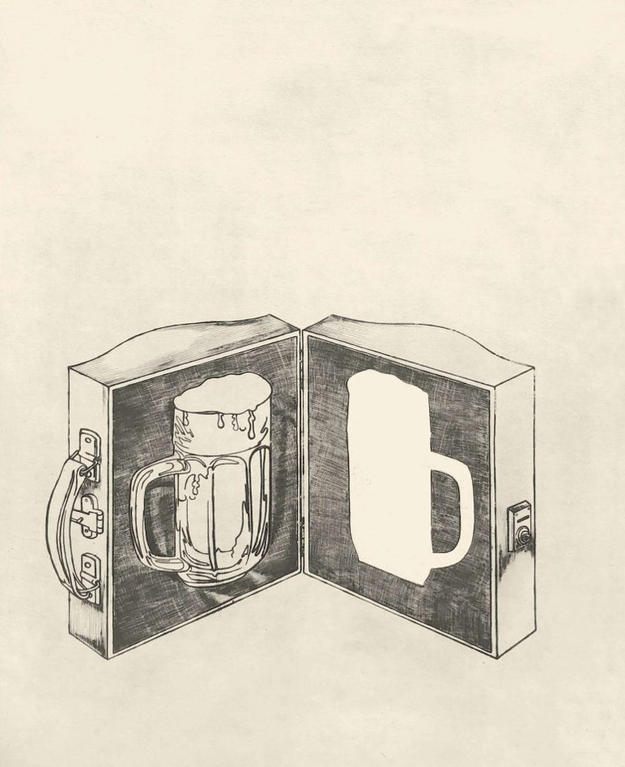

2025-09 | There's only so much letting go you can ask someone to do
It has been a good month for trains and other things that go on tracks. I am starting to get why
people get Very Into Trains: We planned a whole day around taking the narrow-gauge steam train across
a few kilometers of Saxony and I thought it would be a little curiosity for the family and instead
it was some of the purest fun I’ve had in a while, I can’t even explain why. A few weeks later,
Prague had a parade of historical trams to mark the occasion of 150 years of municipal transit,
starting with the horse-drawn tram and ending with some of the very zoomy space boxes, and it was
maybe the happiest I’ve seen so much of the general public together. Never even mind the conductors,
for most of whom it was quite visibly Christmas come early.
🚂 Inspirována tímto modernistickým vibem nahrávám děcku pohádky. Pochopitelně začínám s
O veselé mašince,
doufám že mi za to nikdo nevynadá. Až seženu Pohádky o mašinkách, třeba budeme pokračovat veselými
příhodami ze Smíchova, uvidíme. (Šance že moje děcko nebude ráčkovat se tímto limitně blíží nule.)
A foray into work-world: I have a preprint out about how the winds are changing above the Southern Ocean,
and how we expect them to change in the future as the ozone hole closes, based on some arguments about, among other things,
the Southern Annular Mode, which is based on a pressure difference between two bands of latitude, measured
at six remote stations on each band, with names like Novolazarevskaya or Ile Nouvelle Amsterdam. It always strikes me how,
even though this, and other things like it, are really very important weather and climate patterns,
if you want to download the monitoring for them, there's chiefly the one guy with the
old-school website who collates them every month.
Loud is not the same as important.

Dvě prima věci z Libereckého kraje: První: Moc hezká procházka po Liberci s Pavlem Novotným, jehož
tvorbu jsem předtím neznala. Mluvil o svém kreativním procesu jako o vystřihávání a leštění
obrazců/úryvků z reality. Mírná přifabulace, třeba, ale ne vymýšlení nového materiálu, spíš všímání
si toho, který už existuje. (On o tom pochopitelně povídal hezčejc než já ted’ tady). Druhá: výstava v
Liberecké galerii Jízlivá něha Naděždy Plíškové. Pracovala s asi deseti médiemi,
socha grafika fotka suchá jehla koláž, často reakce na každodennost, vtipná, břitká, hořká, přítomná.
Řešila jak být ve své pozici svobodným člověkem v dialogu se světem v čase, kde defautní gender byl půllitr.
(Také nejhezčí kresby půllitrů piva, co si pamatuju.)

The killers in high places say their prayers out loud — how pathetic to watch the various performative piety
for someone who didn’t really believe in anything. It may not be very Catholic of me to largely just go to
the monastery where I was baptized to drink sunset beers; it’s unimaginably less Catholic to take little
pictures of yourself going to mourning Mass for this fucking guy & post them on the internet for your buddies.
Whatever: ring the bells that still can ring.
Antidote to whatever the hell the above is: At the occasion of Big Thief’s new album release I’ve been
poking around some of their back catalog and reading interviews with Adrienne Lenker. It’s quite variable
stylistically and I like some bits more than others, but I’m struck by how very obviously it comes from a
place of intense, focused, thoughtful presence. (Lenker escaped a cult as a child and spends a lot of her
album release interviews talking about
how we eventually lose everyone we ever love
but that there is much joy to be had despite that, which is a good thing to remember and also probably a bit of an experience
for the interviewer at eight thirty on a Tuesday). One of band’s first songs remains, for me, one of their best —
Old friends, old mothers, dogs and brothers
There's only so much letting go
You can ask someone to do
and the music video
is the sort of thing that would have been an absolute revelation at 22 that I still
find inspiring/endearing these days. Also, absolutely bless this youtube comment:
In 2019 I met a girl on a wildland firefighting assignment. We listened to this song so many times in
those miserable two weeks. We got married in October 2023 ❤❤❤
I said I was over Sally Rooney, but I’m not, I’m reading Intermezzo and I rather like it.